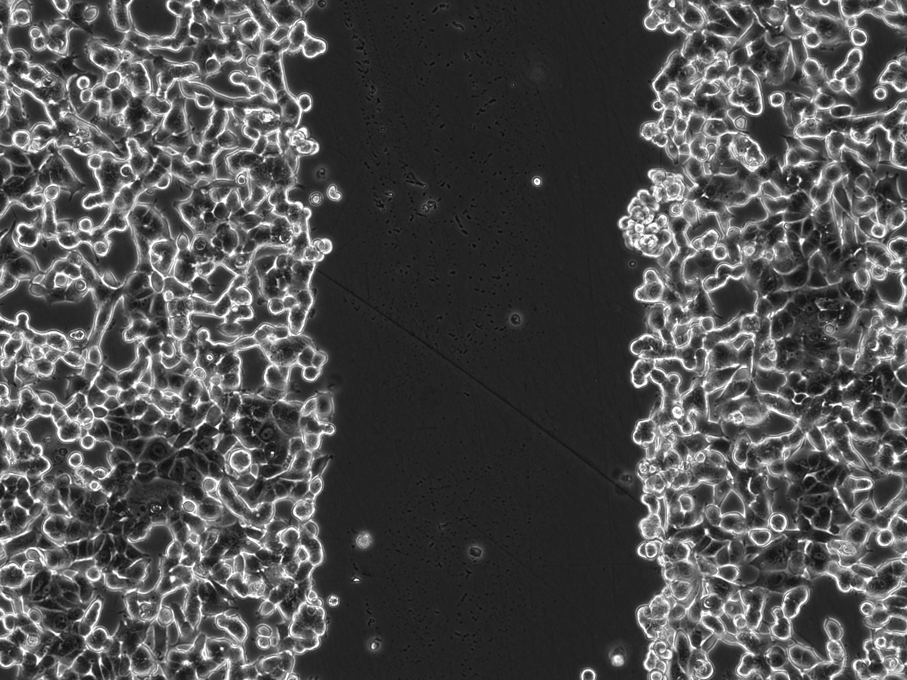
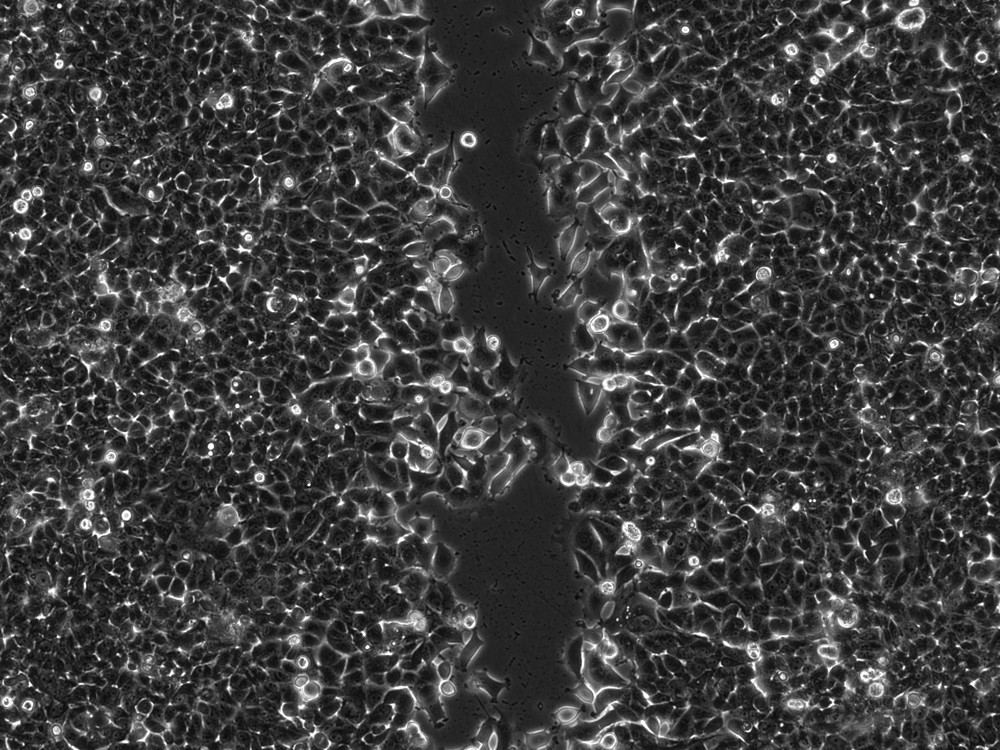
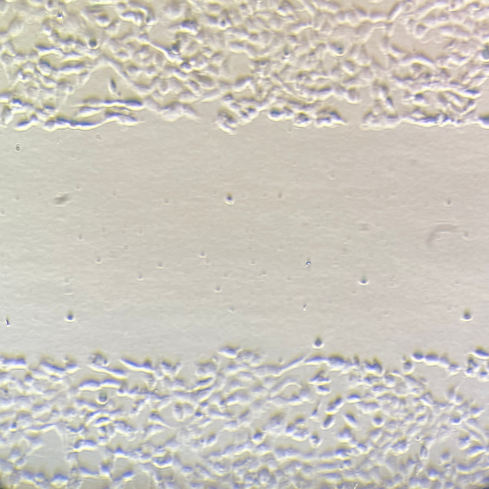
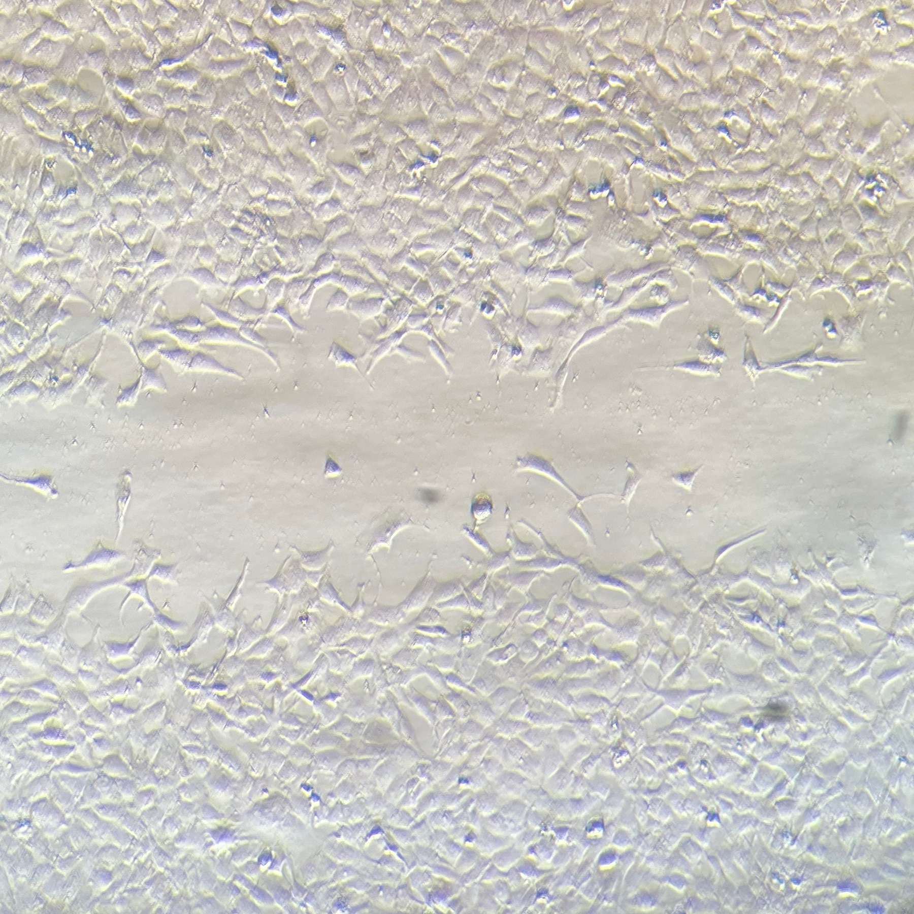
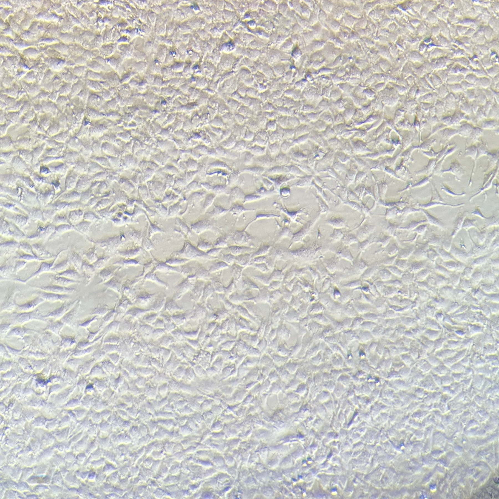
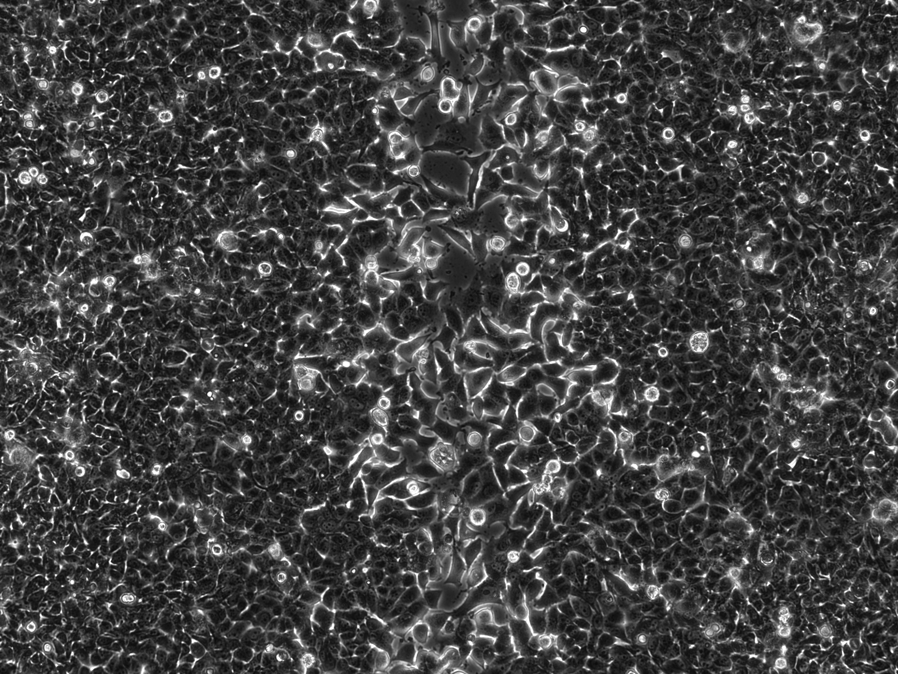
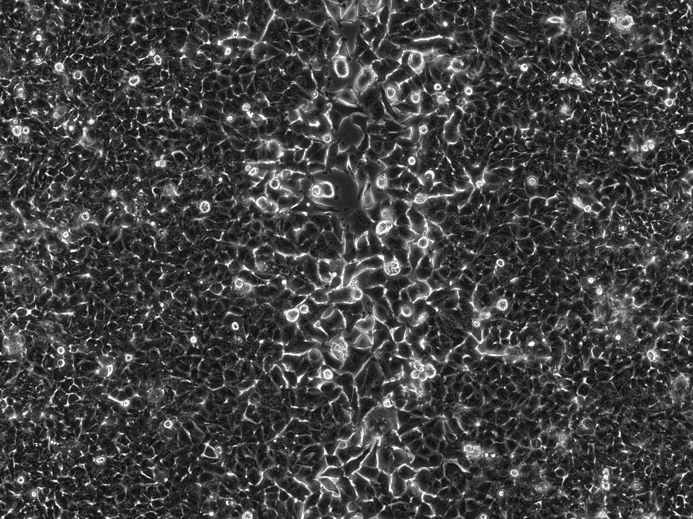
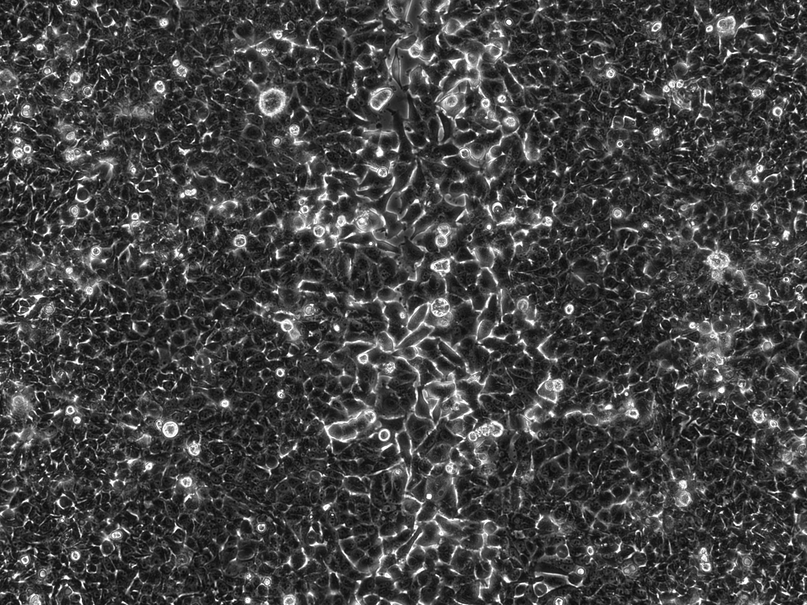

Quick start
M8F brightfield
M8F quick start
Practice orientation correction, brightfield preset selection, group analysis, plotting, navigation, and mask review.
Launch M8F tutorialOpen Cytomove with example wound healing image groups already loaded. Start with the M8F quick-start workflow, then try the WHAD-MCF7 phase-contrast workflow to review a public near-closure time course.
Practice orientation correction, brightfield preset selection, group analysis, plotting, navigation, and mask review.
Launch M8F tutorial
1h early
21h mid 46h near close
46h near close
Practice the phase-contrast preset, group application, area-plot review, and mask inspection on a public near-closure sequence.
Launch MCF7 tutorial
0h edit
24h group
48h groupPractice Fill area, Erase scan, Add scan, Clean specks, Undo, and Reset correction on a challenging phone-captured image.
Launch manual tutorial
36h fragmented
41h hard
46h near closePractice cleanup and local edits on fragmented near-closure phase-contrast frames where automatic masks need careful review.
Launch hard tutorialUse Scratch orientation to rotate the horizontal scratch into vertical analysis view.
Select Brightfield normal cells before running the first segmentation.
Run segmentation on the first image and create the initial contour overlay.
Reuse the same settings across the three loaded M8F time points.
Review the wound area trend before exporting or changing settings.
Return from the plot panel to the image workspace before navigating.
Move to the next time point and inspect the restored contour.
Switch from contour to mask view to verify what is being measured.
WHAD-MCF7 example images are from the WHAD/CAMAD dataset by Iheme et al. (2024), Zenodo, CC BY 4.0, DOI: 10.5281/zenodo.12806149.